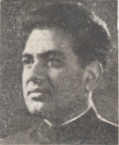

BHANU PRAKASH SINGH

Key Tenures:
Ministry of Rural Development, Minister of State (Independent Charge)
1979 - 1980
Ministry of Agriculture, Minister of State
1977 - 1979
Ministry of Irrigation, Minister of State
1979 - 1979

1st Indira Gandhi Ministry
Ministry of Corporate Affairs
Deputy Minister
Ministry of Industry
Deputy Minister
Ministry of Corporate Affairs
Deputy Minister
Ministry of Industrial Development and Internal Trade
Deputy Minister
Ministry of Chemicals and Fertilisers
Deputy Minister
Ministry of Mines and Metals
Deputy Minister
Ministry of Petroleum
Deputy Minister
Morarji Desai Ministry
Charan Singh Ministry
1st Indira Gandhi Ministry

1_Upload_2854.pdf
1_Upload_2833.pdf

Indira Gandhi
o-Indira_Gandhi.htmlPrime Minister
24 January 1966 - 18 March 1971

Fakhruddin Ali Ahmed
o-Fakhruddin_Ali_Ahmed.htmlCabinet Minister
13 March 1967 - 14 February 1969
Bhanu Prakash Singh
o-Bhanu_Prakash_Singh.htmlDeputy Minister
18 March 1967 - 14 February 1969
Relevant Orders
1_Upload_2854.pdf[15]18 Mar 1967Council of Ministers1_Upload_2855.pdf[48]11 Apr 1967Council of Ministers1_Upload_2856.pdf[47]12 Sep 1967Council of Ministers1_Upload_2857.pdf[52]20 Nov 1967Council of Ministers1_Upload_2835.pdf[51]28 Apr 1968Council of Ministers1_Upload_2836.pdf[50]23 Aug 1968Council of Ministers1_Upload_2833.pdf[26]14 Feb 1969Change of Portfolio